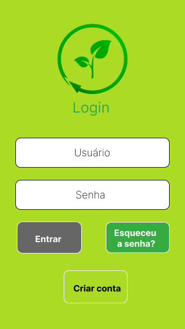
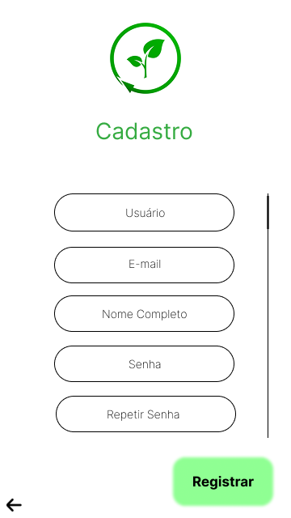
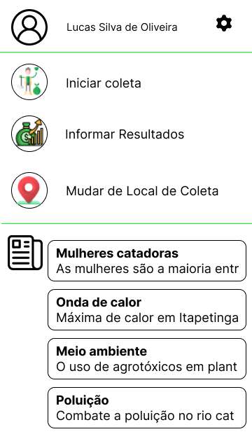
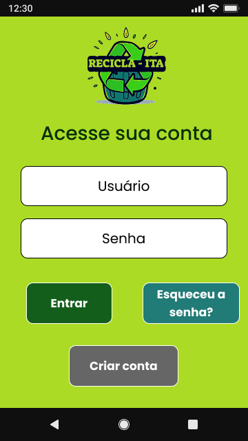
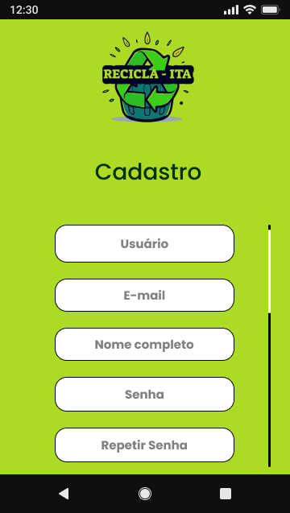
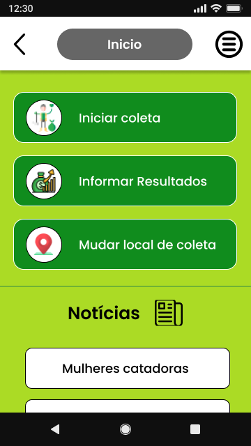
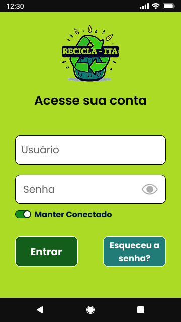
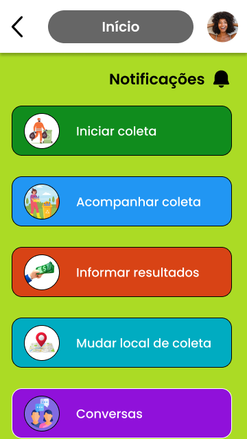
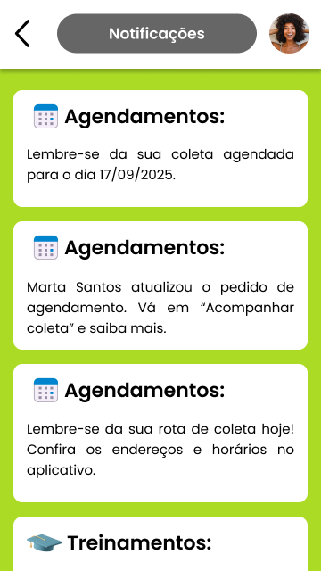

Recicla-ITA
Conectando cidadãos e catadores para otimizar a logística de resíduos recicláveis

Sobre
O Recicla-ITA é uma solução digital desenvolvida por estudantes de Sistemas de Informação do IF Baiano, em parceria com a 2º Regional da Defensoria Pública da Bahia, o programa Mãos que Reciclam e cooperativas locais. O projeto visa é otimizar a logística de materiais recicláveis em Itapetinga-BA, conectando cidadãos e catadores através de um aplicativo móvel/desktop para agendamento de coletas, complementando por um dashboard administrativo para o monitoramento de métricas ambientais pela Defensoria.
Minha atuação como Product Desginer e Desenvolvedor Front-end ocorreu na fase de evolução estratégica, partindo das validaçãoes iniciais realizadas com os parceiros. Fui resoponsável pelo refinamento do protótipo para garantir a acessibilidde e usabilidade da interface, além do desenvolvimento técnico do front-end do dashboard administrativo, assegurando uma ferramenta funcional, responsiva e orientada a dados.
Status: Atualmente, o projeto encontra-se em fase avançada de desenvolvimento. O foco na futura implementação e validação em Itapetinga-BA.

Desafio
O maior desafio deste projeto foi transpor a barreira da exclusão digital e do baixo letramento. O público-alvo é formado por catadores de materiais recicláveis, em sua maioria idosos e pessoas com baixa escolaridade ou analfabetismo funcional.
Desenvolver uma interface para este perfil exigiu olhar além dos padrões convencionais de UI. Foi preciso resolver questões como:
- Dificuldade de leitura e interpretação
- Baixa familiaridade tecnológica
- Contexto social
Solução
Para enfrentar esses desafios, a solução foi fundamentada em pesquisa metodológica e no design inclusivo. A abordagem inclui:
- Fundamentação científica: Revisão sistemática de literatura focada em acessibilidade para usuários de baixo letramento. Isso permitiu identificar padrões de sucesso, como uso de rótulos claros, tipografia ampliada, alto contraste e, a substituição de instruções textuais por ícones intuitivos.
- Prototipagem centrada no usuário: No Figma, foram desenvolvidos interfaces com fluxos simplificados, evitando menus complexos e telas intermediárias que pudessem causar desorientação.
- Validação estratégica: O protótipo foi validado pela coordenação do programa Mão que Reciclam e com o líder das cooperativas de catadores. Esse feedback foi crucial para ajustar requisitos de software e garantir que o dashboard e o aplicativo atendessem às necessidades reais do dia a dia da coleta.
Processo de Design
1. Análise de requisitos
Estudo da base teórica sobre acessibilidade para idosos e analfabetos funcionais, utilizando os resultados das pesquisas inciais como guia para as soluções de design.
2. Prototipagem e evolução de interface
Reestruturação completa do MVP, passando dos wireframes até a interface final de alta fidelidade.
3. Teste de conformidade
Rodadas de validação com stakeholders para ajustes de interface.
4. Desenvolvimento do sistema
Do protótipo ao código.
Wireframes de baixa fidelidade




Wireframes de média fidelidade




Protótipos de alta fidelidade
Aplicativo dos catadores




Aplicativo dos cidadãos


Dashboard Administrativo


Mais para explorar

Landing Page da LabsIF
Contrução da identidade tecnológica da LabsIF em um site intuitivo, focado em apresentar os serviços de criação de apps e sistemas da software house para novos clientes.

EatEating
Sistema para controle de acesso ao refeitório do Campus, por meio de login com biometria, RFID ou credenciais através de uma catraca física, permitindo a compra antecipada de tickets e consulta de cardápios.
Gostou deste projeto?
Vamos conversar sobre como posso ajudar no seu próximo projeto!
Entre em contato